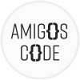

Introduction
With more than 3 years of professional work experience in quality assurance working in an Agile environment, achieved two degrees , a bachelor's degree from Taiwan, and a post-graduate diploma in computer programming from Seneca College. From my previous work experience, I have worked on different testing methodologies, including API testing, web testing, and manual testing on different devices. Also, I have experience in different testing tools, for example, writing API test scripts using JMeter and Postman, and simulating user behavior using Selenium. It’s an overview of my professional work experience. I also have developed different projects from school works, for example, a shopping cart project and an assembly line simulation project using C++ and SQL . Build the website using JavaScript, MongoDB, and deploy on Heroku . In addition, I have built my own project using Docker, Postgres, and Java Spring boot framework . It was a summary of my programming background. When it comes to my personality, I will say I have strong time management and analytical skill to complete multiple big projects simultaneously and deliver projects on time and receive positive feedback from my teams. I was also helping and coaching new testers to solve technical problems and help teams grow together. To sum up, it’s a brief introduction to my professional experience, programming background, and myself.Personality Traits
- Problem-solving
- Collaborative Team player
- Continuous learner
- Detail-oriented
- Curiosity
- Positive and Calm
- Self-motivated
- Self-discipline
Professional summary
Skills
Programming languages
Java, Spring Boot, C++, JavaScript, Node.js, Express.js, HTML/CSS
Testing Tools
JMeter, Selenium, QTP, Postman, TestNG, JUnit
Testing methodologies
API Testing, Mobile Testing, Web Testing, Functional Testing, Regression Testing, End-To-End Testing, Stress Testing, A/B Testing, Test Design/Test Case
Database Management
MongoDB, MySQL, Postgres, Oracle
Containerization
Docker
Version Control System
Git, GitHub
Other
Jira, Trello, Confluence, Slack, Agile, Test Manager, Mantis, Swagger
Certificates
Certified Tester, Foundation Level - Issued Jan 2023
ASTQB - ISTQB in the U.S. - Official Page

Getting Started with Spring Boot - Issued Jan 2023
Amigoscode
 Java: Automated API Testing with REST Assured - Issued Jan 2023
Java: Automated API Testing with REST Assured - Issued Jan 2023
LinkedIn
LambdaTest Test Automation Professional Certificate - Issued Dec 2022
LambdaTest
Education
Computer Programming
Seneca College 2020-2022
Information and Finance Management
National Taipei University of Technology 2015-2019